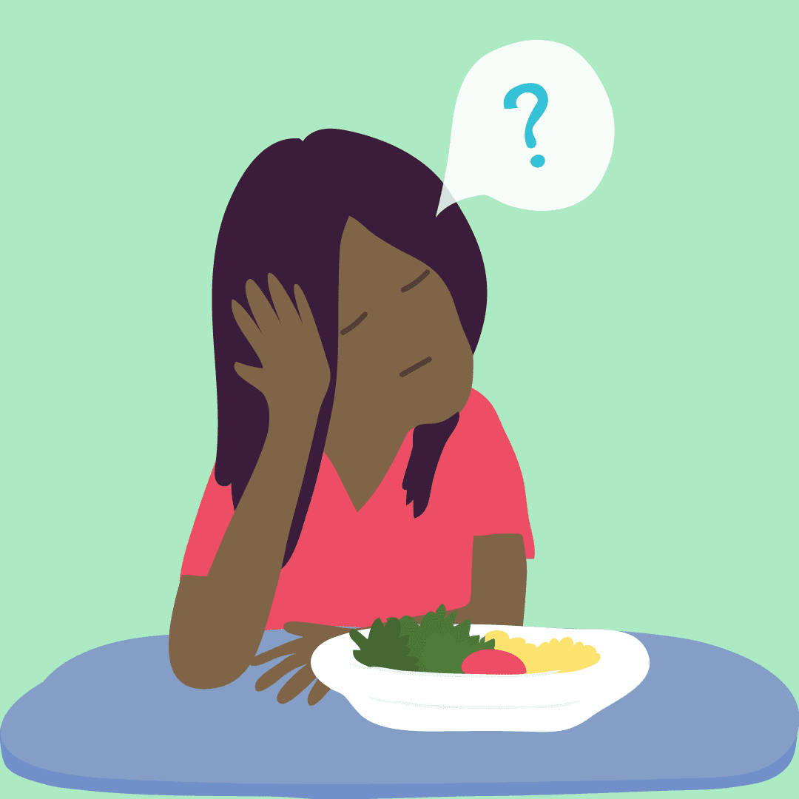
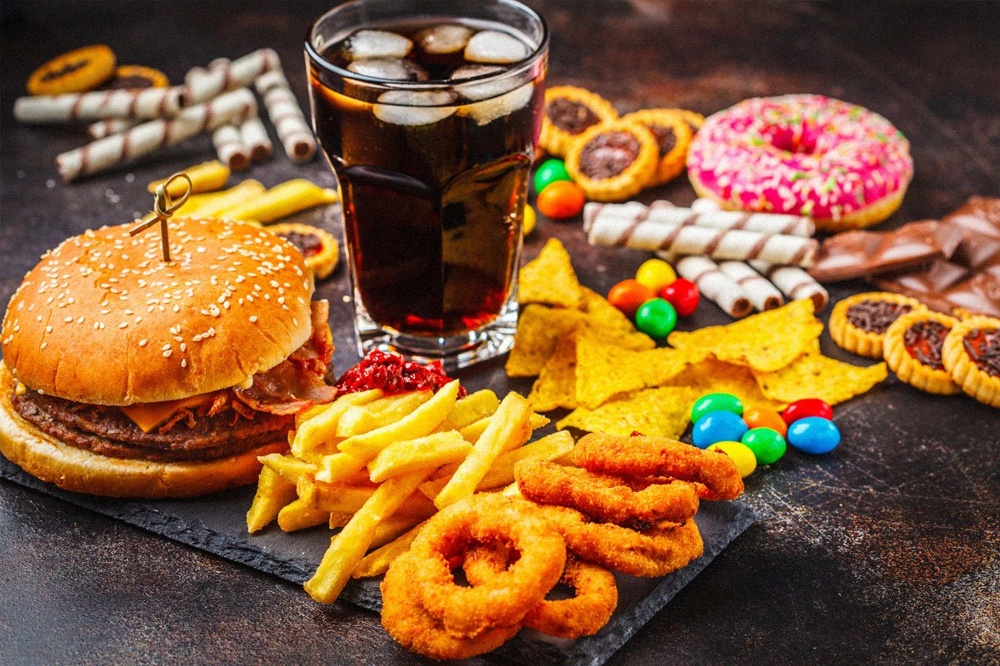

Πως να μην τρώτε τα συναισθήματα σας
Μα το φαγητό πρέπει να μας κάνει να αισθανόμαστε καλά! Έχει ωραία γεύση και γεμίζει το σώμα μας με θρεπτικά συστατικά και ενέργεια!
Μια πολύ λογική διαπίστωση, που δεν βρίσκει καμία εφαρμογή στην καθημερινότητα των περισσότερων από εμάς. Αν φάμε λιγότερο ή περισσότερο η υγεία και η ποιότητα της ζωής μας επηρεάζεται -αρνητικά- και κατά συνέπεια το ίδιο συμβαίνει και στην ψυχολογία μας....Διαβάστε περισσότερα

Τί να κάνεις μετά από ένα ολίσθημα
Mετάβαση από την διατροφή των εορτών πίσω στο ισορροπημένο μεσογειακό πλάνο, μπορεί να φαντάζει πρόκληση.
Κι αυτό γιατί πάνω που παίρνεις την απόφαση να σταματήσεις να τρως χαζομάρες όλο και κάτι γίνεται και καταλήγεις να πέφτεις σε ολίσθημα.
Αυτό που ίσως δεν σου έχει πει κανένας μέχρι τώρα όμως, είναι ότι...Διαβάστε περισσότερα
 Γιατί τιμωρείς τον εαυτό σου;
Γιατί τιμωρείς τον εαυτό σου;
Ξεκινάει μια καινούρια ημέρα. Σήμερα θα προσέξεις την διατροφή σου περισσότερο γιατί εχθές ξέφυγες από το πρόγραμμα σου και έφαγες 2 κομμάτια πίτσα το βράδυ. Έτσι λοιπόν...Διαβάστε περισσότερα